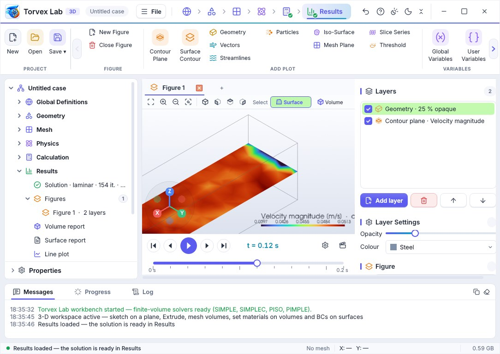
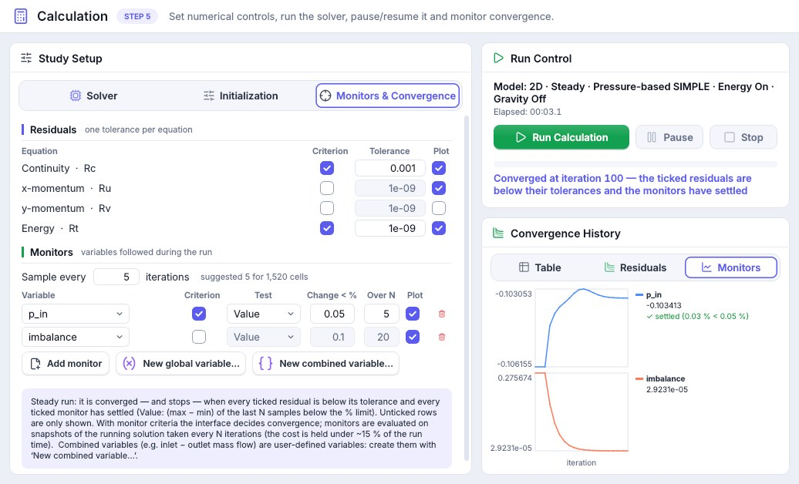

See how your design performs before you build it.
Altyra simulates how air, water and heat move through and around machines and components — heat exchangers, pumps, fans, ducts, wings, electronics. Compare designs, find the losses and hot spots, and fix them on the screen instead of on the test bench.
Background: flow past a cylinder with vortex shedding, computed live in your browser.
Engineering problems it solves
From the first sketch of a component to the check of a finished design: the questions engineers ask, answered with flow and heat-transfer simulation.
- Heat exchangers and thermal equipment
- Outlet temperatures, heat duty and pressure drop on both sides; heat conducted through walls and fins (conjugate heat transfer); where the flow bypasses the surface.
- Pumps, fans and rotating machinery
- Flow through impellers, rotors and mixers with a rotating reference frame, sliding mesh or overset mesh; pressure rise, forces on blades, recirculation and losses.
- Aerodynamics and external flow
- Lift and drag of profiles, wings and bodies; wakes, separation and vortex shedding; the unsteady loads that drive vibration of tubes, cables and structures.
- Piping, ducts and valves
- Pressure losses and flow distribution in manifolds, bends, contractions and cooling passages — the numbers that size pumps and fans.
- Electronics and component cooling
- Temperatures of heat sinks, cold plates and enclosures under forced or natural convection; heat flowing from solids into the coolant.
- Buildings and HVAC
- Ventilation, buoyant plumes and natural convection in rooms and cavities, with temperature-dependent properties and gravity.
- High-speed and compressible flow
- Nozzles, intakes and bodies at high Mach number: shocks, total-pressure losses and heating, with density-based solvers for ideal gases.
From geometry to decision in six steps
One window takes you through the whole analysis. Each step shows whether it is complete, needs attention, or is out of date after a design change — so a modified geometry never runs with old settings.
Set the problem
2-D, axisymmetric or 3-D; steady or transient; incompressible or compressible; heat transfer, gravity, turbulence.
Build the geometry
Parametric 2-D sketches with dimensions and constraints; 3-D parts by extrude, revolve and cut.
Mesh it
Triangles, quads or tetrahedra, with boundary layers set by the first-cell height and quality checks after every build.
Define the physics
Fluids and solids from a material library, inlets, outlets, walls, heat sources and rotating parts.
Solve and monitor
Follow forces, flow rates or temperatures live; the run stops when both residuals and your quantities have converged.
Read the results
Contours, streamlines, particle paths, forces, heat flows and mass balances; animations of transient runs.
Physics and numerical methods
Finite-volume solvers on unstructured meshes, written from the equations up and checked against reference data.
- Incompressible flow
- Pressure-based SIMPLE, SIMPLEC, PISO and PIMPLE with Rhie–Chow interpolation; steady and transient.
- Compressible flow
- Density-based Riemann solvers (HLLC, Roe, AUSM+-up, HLLE, Rusanov) and a preconditioned solver for all speeds.
- Turbulence
- k–ε with wall functions, k–ω, k–ω SST and Spalart–Allmaras.
- Heat transfer
- Convection, conduction in solids coupled to the fluid, buoyancy, temperature-dependent properties.
- Moving parts
- Moving reference frame, sliding mesh and overset meshes.
- Engineering quantities
- Forces, flow rates, averages and heat flows on any surface, combined in your own expressions and monitored during the run.
The application
A native desktop application for Windows. The solver runs in its own process, so the interface stays responsive during long runs and results can be inspected while it computes.


Results you can check
A simulation is only useful if it is right. Each case study sets up a problem with known experimental, published or exact results and compares Altyra with them, step by step.
Lid-driven cavity
The reference test of every flow solver: a box whose lid slides and drives one large vortex. If a code fails here, no design result can be trusted.
Compared with: Ghia, Ghia & Shin (1982)Flow over a cylinder
Wake, drag and vortex shedding behind a cylinder — the mechanism behind loads and vibration on tubes, cables, chimneys and offshore risers.
Compared with: Dennis & Chang (1970), Williamson (1996)Counter-flow heat exchanger
Two streams exchanging heat through a solid wall: outlet temperatures and heat duty checked against the ε-NTU method used to size real exchangers.
Compared with: Shah & London (1978), Incropera et al.Laminar channel flow
Velocity profile and pressure drop in a channel, against the exact solution — the basis of every pressure-loss estimate in ducts and cooling passages.
Compared with: Analytic (Poiseuille)
Have a flow or thermal problem?
Describe the component and the question you need answered.